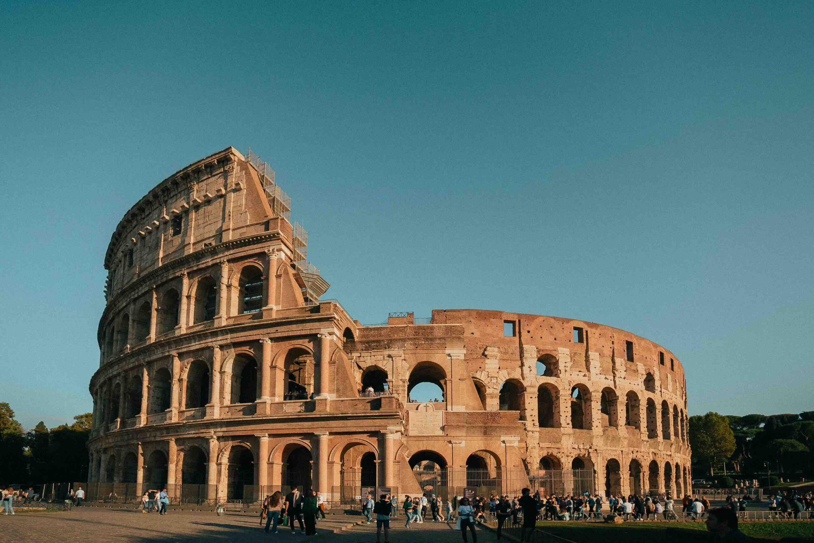
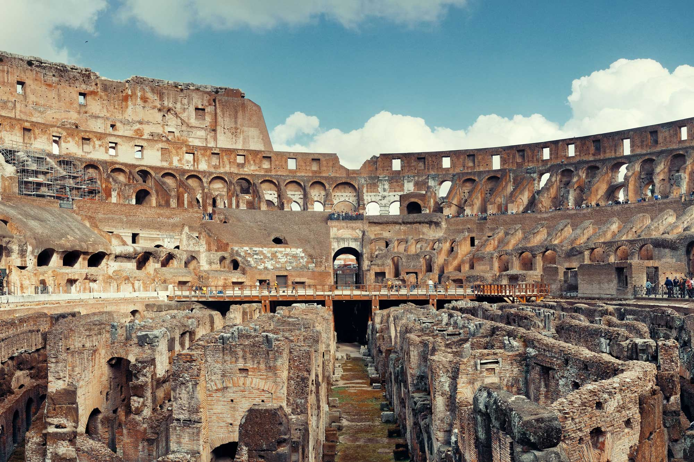
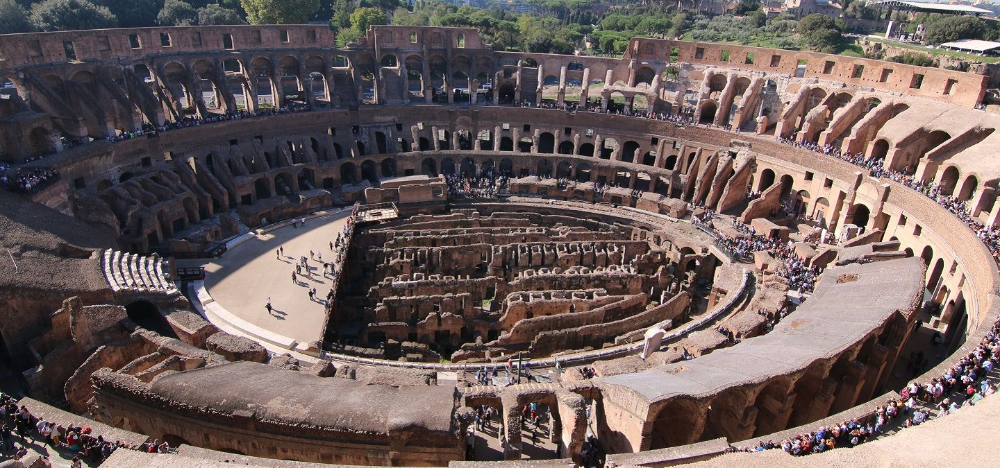

Discover the History of the Colosseum
The Colosseum is a symbol of Ancient Rome and its engineering marvels. This amphitheater once hosted gladiator battles and public spectacles, and it remains one of Rome’s most iconic landmarks.
Visit the Colosseum to learn about its history and the events that took place within its walls.
Address: Piazza del Colosseo, 1, 00184 Roma RM, Italy


